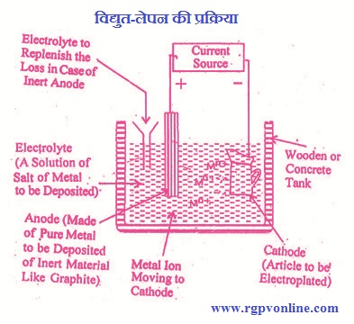

Q.14 : विद्युत्-लेपन पर संक्षिप्त टिप्पणी लिखिए।
उत्तर -
विद्युत्-लेपन (Electroplating)- विद्युत्-अपघटनी विधि द्वारा एक धातु पर दूसरी धातु की परत चढ़ाने की क्रिया विद्युत्-लेपन कहलाती है। सामान्यतः प्रारम्भ में विद्युत्-लेपन की क्रिया से विभिन्न प्रकार के उपकरण, सजावटी वस्तुओं पर परत चढ़ाई जाती थी, परन्तु आज के युग में विद्युत्-लेपन का उपयोग धातुओं की संक्षारण (corrosion) से रक्षा करने के लिए किया जाता है।
विद्युत्-लेपन के उद्देश्य- विद्युत्-लेपन को प्रमुख उद्देश्य धातुओं का संक्षारण रोकने के लिए सक्रिय धातु पर कम सक्रिय धातु का विद्युत्-लेपन करना है। उदाहरण के लिए, लोहे का संक्षारण रोकने के लिए इस पर टिन धातु का विद्युत्-लेपन किया जाता है। सामान्यतः भारी धातुओं पर गोल्ड, सिल्वर, प्लेटिनम के समान उत्कृष्ट धातुओं (noble metals) अथवा क्रोमियम के समान संक्षारण-प्रतिरोधी धातु की परत चढ़ाई जाती है। अधिकांशतः साधारण तथा सस्ती धातु को सुंदर बनाने के लिए विद्युत्-लेपन द्वारा सुंदर धातु की परत चढ़ा देते हैं जिससे वस्तु सुंदर व सजावटी दिखने लगती है, जैसे- चाँदी के आभूषणों पर सोने की परत चढ़ाना आदि।
क्रियाविधि - विद्युत्-लेपन की क्रियाविधि निम्नलिखित तीन पदों में पूर्ण होती है –
(i) विद्युत्-लेपन की जाने वाली सतह को साफ एवं चिकना करना (cleaning),
(ii) धातु का विद्युत्-लेपन करना (plating)
(iii) अंत में विद्युत्-लेपन पर पॉलिश करना (polishing)

चित्र 14.1 विद्युत-लेपन की प्रक्रिया
एक धातु पर दूसरी धातु की परत चढ़ाने के लिए सर्वप्रथम उसकी सतह साफ करनी चाहिए। जिस धातु पर विद्युत्-लेपन करना होता है, उसे क्षारों के विलयन या अन्य पदार्थों से साफ करके जंग आदि हटा देते हैं। इसके पश्चात् धातु की सतह चिकनी की जाती है। इस सतह को बिना स्पर्श किये टैंक में लटका दिया जाता है तथा इसे कैथोड बना दिया जाता है। विद्युत्-लेपन के लिए प्रयुक्त टैंक लकड़ी के बनाये जाते हैं जिसमें काँच अथवा ढली हुई इस्पात का अस्तर लगा देते हैं, जिस धातु की परत चढ़ाई जाती है वह ऐनोड की बनी होती है जिसे टैंक की लम्बाई के साथ दोनों ओर लटका दिया जाता है। कैथोड को दोनों ऐनोड के मध्य में लटका दिया जाता है जिससे उस पर धातु चढ़ सके। टैंक में लेप चढ़ाने वाली धातु के लवण का विलयन लेकर उसमें कैथोड और ऐनोड डुबो देते हैं। विलयन की चालकताः बढ़ाने के लिए कुछ अभिकारक मिला देते हैं। जब विलयन में विद्युत् धारा प्रवाहित करते हैं। तो धातु के धनात्मक आयन कैथोड की ओर स्थानांतरित हो जाते हैं व विद्युत्-लेपन की जाने वाली धातु के चारों ओर एकत्रित होकर जम जाते हैं। विद्युत्-लेपंन धातु की परत की मोटाई, विद्युत् धारा के घनत्व और लेपन के समय पर निर्भर करता है।
विद्युत्-लेपन को प्रभावित करने वाले कारक - इसको प्रभावित करने वाले कारक निम्नलिखित हैं -
(i) नमी - वायुमण्डल में उपरिथत नमी के कारण विद्युत्-लेपित धातुओं की परत प्रभावित होती है, उदाहरण - लोहे पर जंग लगना।
(ii) धातु में अशुद्धि की उपस्थिति - धातु में अशुद्धि की उपस्थिति के कारण विद्युत् - लेपन प्रभावित होता है, क्योंकि इस स्थिति में धातु ऐनोड का और अशुद्धि कैथोड का कार्य करने लगती है।
(iii) जल में CO2 की उपस्थिति - जल में CO2 के घुले होने के कारण लोहे पर जंग शीघ्रता से लगती है।
(iv) लेपन की जाने वाली धातु साफ करना- लेपित होने वाली धातु, आधार धातु की सतह धूल, ग्रीज, तेल तथा संक्षारण पदार्थों से मुक्त होनी चाहिए अन्यथा विद्युत्-लेपन प्रभावित होता है।
(v) विलयन का pH मान - अच्छे लेपन के लिए विलयन का pH नियंत्रित होना चाहिए, जैसे- Ni के विद्युत्-लेपन के लिए pH मान 5:5 से 5-7 के मध्य होना चाहिए।
(vi) विद्युत् धारा का घनत्व - विद्युत् धारा के घनत्व से तात्पर्य लेपित की जा रही वस्तु के प्रति इकाई क्षेत्रफल पर विद्युत् धारा की मात्रा से है। यदि धारा का घनत्व अधिक है तब लेपन ढीला (loose) तथा भंगुर होता है तथा यदि धारा का घनत्व बहुत कम होता है तब लेपन बहुत धीमी गति से होता है।
(vii) कतिपय पदार्थों का मिलना- कतिपय पदार्थ, जैसे - गोंद, जिलेटिन, बोरिक अम्ल तथा ग्लाइसिन इत्यादि की सूक्ष्म मात्रा मिलाने से जमने वाली धातु मजबूत तथा एक समान परत बनाती है। इसके अतिरिक्त कुछ पदार्थ, जैसे- सोडियम फॉर्मेट तथा कोबाल्ट सल्फेट इत्यादि के मिलाने से जमने वाली परत की चमक बढ़ जाती है।